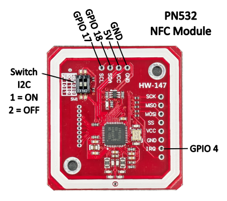
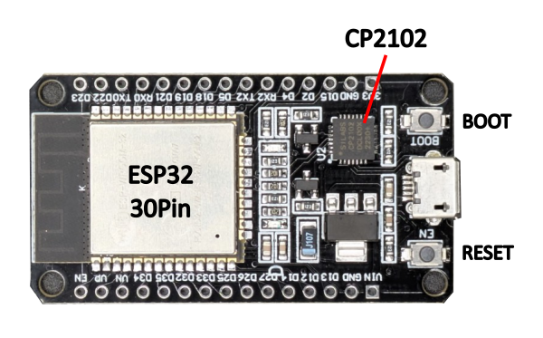
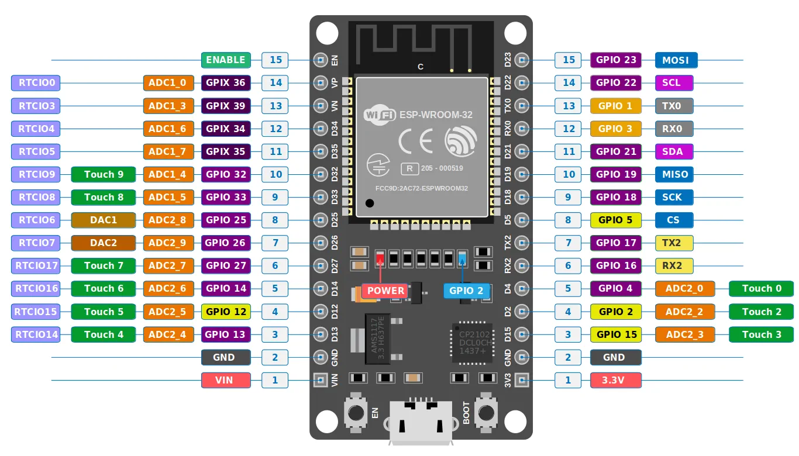

Use with standard esp32. Version with Display see here.
Note: The configuration data can be deleted using "Erase device." Otherwise, it will be retained even with the new firmware. LOGS & CONSOLE is no needed.
Note on the headless version: The headless version does not support display. The terminal window can be used for status monitoring and error analysis. LEDs connected to GPIO 21 and GPIO 2 (onboard LED) provide visual status feedback.
When you flash a new ESP32 or use “Erase device.” the ZapBox automatically starts in configuration mode and the ready LED will blink slow.”
→ The ZapBox is now ready to receive configuration data. ⚙️
If parameters have already been saved and need to be changed, you can also open CONF mode retrospectively by pressing and holding the BOOT button for at least 5 seconds.
Note: The connection will remain active for 3 minutes (180 seconds) before it is automatically disconnected. If data is already available. You can terminate the connection prematurely by pressing the BOOT button again.
Note: Once you establish a connection by clicking “Connect” below, some ESP32s with special communication chips (CP2102) will restart once, and you will need to reactivate configuration mode after connecting.
Congratulations on configuring your own ZapBox! 🎉
Note: You can see the logs from the device in the black terminal window when you are connected. Below you will find additional optional functions and settings.
Choose pulsing/blinking mode for relay control
Note: Special modes control how the relay switches during the configured duration. "Standard" means simple on/off. Other modes create pulsing/blinking patterns with configurable frequency and duty cycle.
leave empty for normal mode (default)
placeholder
12 (default)
Note: As soon as something is entered in the "Wallet Invoice/Read Key" field, "THRESHOLD MODE" becomes active. "NORMAL MODE" then no longer works. The data specified in the bitcoinSwitch extension, such as amount, PIN, and time, is ignored. Only a payment to the wallet with the invoice key counts.
How can I use this? Either by receiving payment directly into the wallet or by using the "Pay Links" extension. There you can get a static LNURL and even a lightning address. Payments to these addresses then trigger the pin, provided the threshold value is reached or exceeded.
NFC Bolt Card support
The NFC Bolt Card functionality requires the LNbits extension "zapbox_extension". The ZapBox automatically detects which extension is installed on your server – no manual configuration required. If "zapbox_extension" is active, NFC Bolt Card payments are available out of the box. If only "bitcoinswitch_extension" (Bitcoin Switch) is installed, the ZapBox switches to that automatically.
Repositories from where the extensions can be downloaded:
https://installer.zapbox.space/extensions.json

The ZapBox features a hierarchical error detection system with automatic diagnostics. Error states show distinct blink patterns on GPIO 21 and GPIO 2 (onboard LED):
| Priority | Error Type | LED Pattern | Description |
|---|---|---|---|
| 1 (Highest) | NO WIFI | 1 blink | WiFi network not connected → Wifi data correct? → WiFi signal too weak? |
| 2 | NO INTERNET | 2 blinks | Internet connectivity lost → Internet accessible? |
| 3 | NO SERVER | 3 blinks | LNbits server unreachable -> Server hardware down? -> Device string correct? |
| 4 (Lowest) | NO WEBSOCKET | 4 blinks | WebSocket protocol/handshake failure -> LNbits down? -> Device string correct? |
Note: Higher priority errors override lower priority error displays. Each error pattern has a 2 second pause between sequences. Use the serial terminal to monitor detailed error messages.
Note: The headless version (ESP32 Dev Module without display) does not have a visual Report page. Use the serial terminal to monitor all errors and status messages.
If a wallet scanning the QR code shows an error message, here's what it means:
"bitcoinswitch ... is disabled" → The Bitcoin Switch was actively disabled in LNbits
"No active bitcoinswitch connections" → The handshake between the wallet and ZapBox failed. -> Wait or restart the ZapBox to re-establish the connection.
Relay does not switch, but payment was successful → Wrong GPIO pin configured in LNbits?
Some ESP32s must first be put into mode before flashing or transferring data. Otherwise, they will refuse to transfer. Try these:


Source: esp32.implrust.com